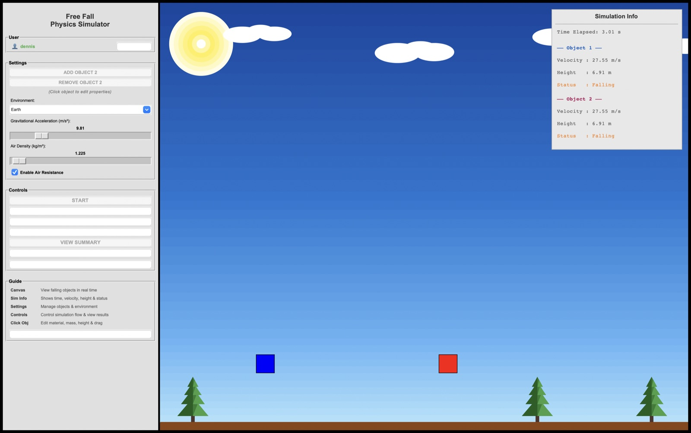
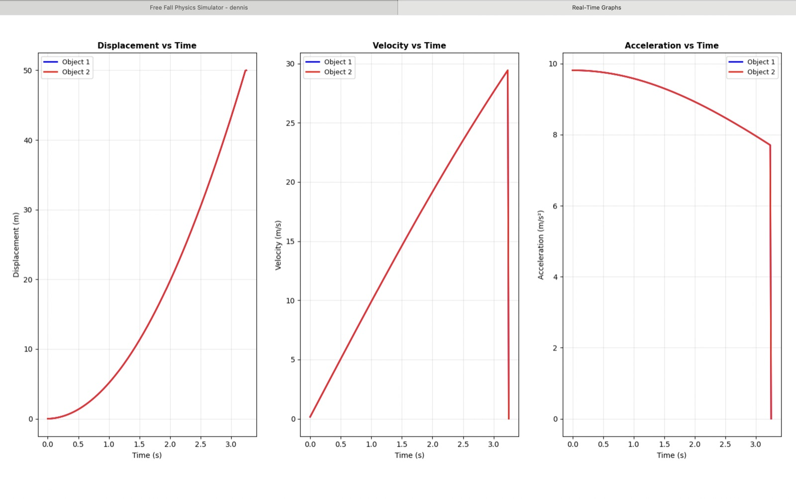
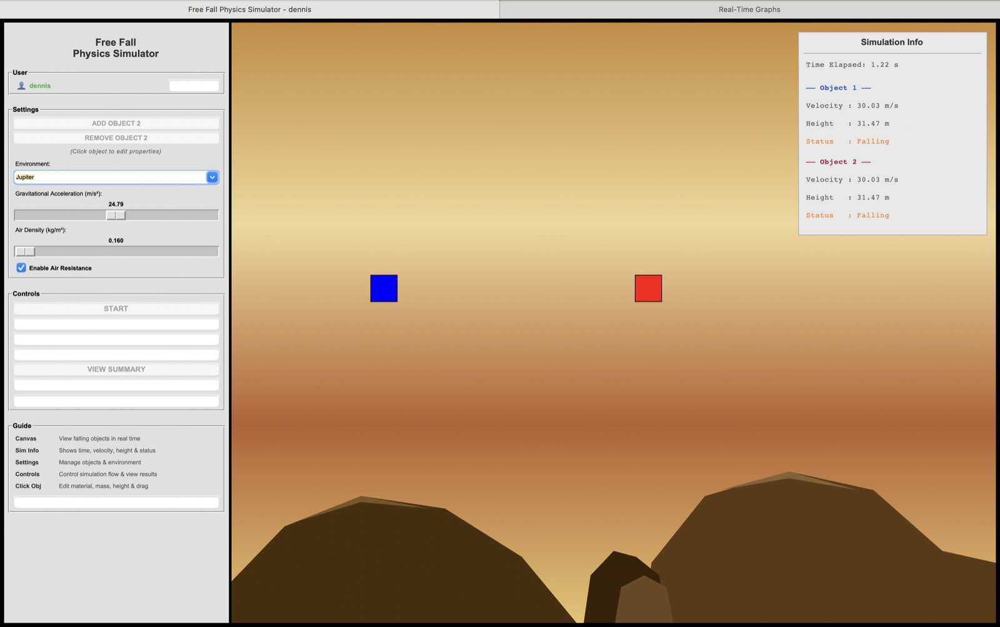

A desktop app for learning kinematics: drop objects under different gravity and air resistance and watch the motion, the numbers and the graphs change in real time.

My part
I contributed to the design and development of the app:
Storyboards: designed the storyboards for the whole application, which the team built from across all four increments
Real-time graphs: built the graphing feature, one of the app's core features, which plots displacement, velocity and acceleration against time from the simulation data with Matplotlib, updating live during a run, colour-coded per object
Interface: increased font sizes and resized the control panel and the simulation info panel, following feedback that the text was too small to read

What the app does
Drop up to two objects side by side, with material presets from feather to lead, or set mass, drag coefficient and area by hand
9 planetary environments, each with its own gravity, air density and background; air resistance can be turned on or off
Live info panel (time, velocity, height, status), a run summary, and a 20-question random physics quiz
Sign up / log in with input validation

Testing: vacuum-mode fall times matched t = √(2h/g) on Earth, the Moon and Mars; all 31 test cases from Increment 3 passed, plus the new login tests.
What I'd do differently: plan the harder features earlier (sound effects, graph export, a terminal velocity indicator and password hashing were left out for time), and store passwords hashed instead of in plain text.